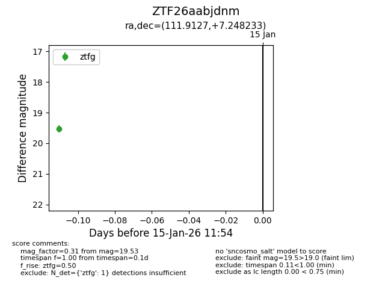
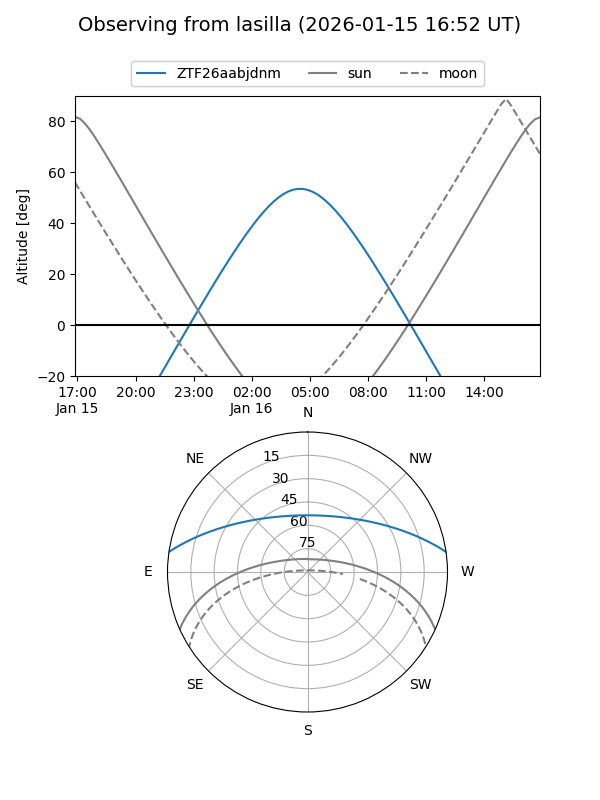
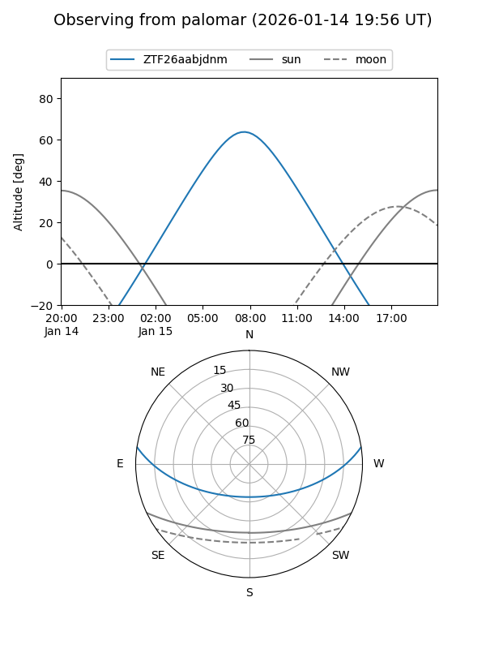

ZTF26aabjdnm
Target ZTF26aabjdnm at 2026-01-15 11:55
Aliases and brokers:
FINK: link
Lasair: link
ALeRCE: link
alt names
ZTF26aabjdnm (ztf,fink_ztf)
Coordinates:
equatorial (ra, dec) = 111.9127,+7.24823
equatorial (HMS+DMS) = 07:27:39.04,+07:14:53.64
galactic (l, b) = (210.5289,+11.32957)
Flags:
Photometry:
last ztfg=19.53
1 ztfg detections
Lightcurve

Visibility


Additional plots